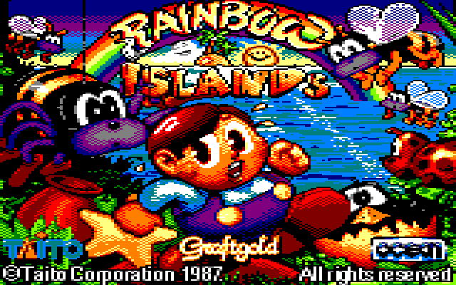
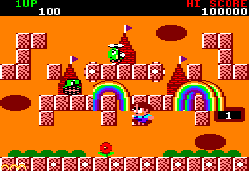
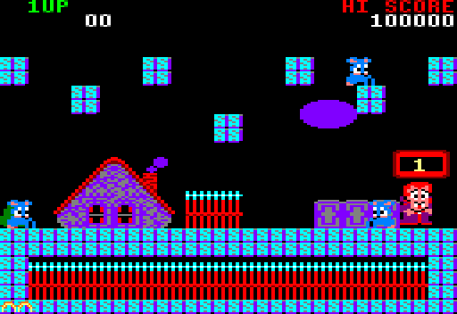
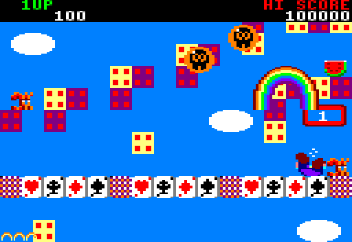
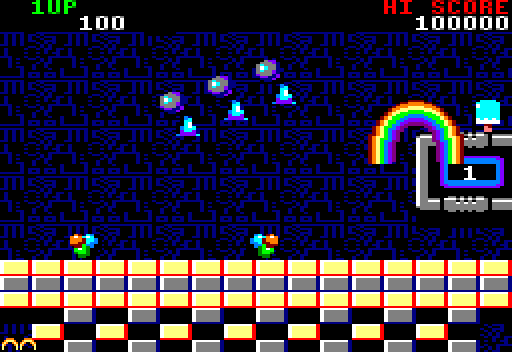
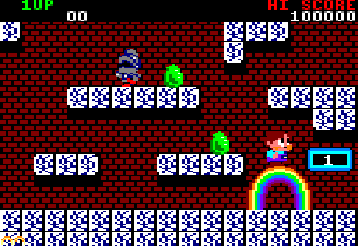
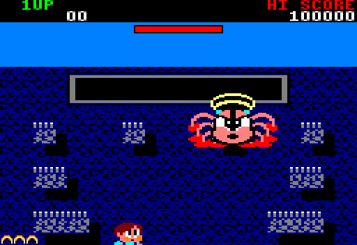
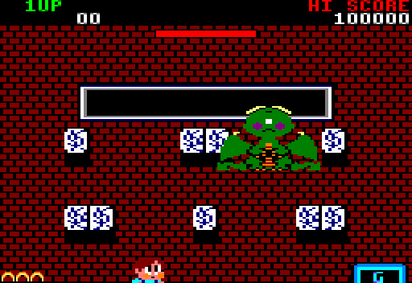
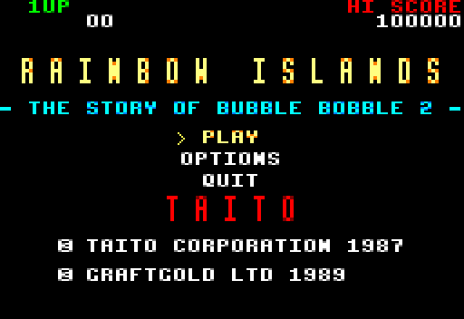

Monter avant que l'eau ne monte
Bub doit grimper jusqu'au panneau G en haut de chaque round, pendant que la mer monte derrière lui. Son arme : des arcs-en-ciel. Ils assomment les ennemis, servent de passerelles et d'escaliers, et en retombant dessus après un saut, on les casse : ils tombent et changent les ennemis écrasés en diamants.
7 îles, 28 rounds, un boss à la fin de chaque île, les fruits, les bonus, l'alerte HURRY!, l'écran de continue et la fin du jeu.

Les sept îles
Chaque île a ses couleurs, ses ennemis et son boss. Captures du jeu tel qu'il tourne dans le navigateur.







Commandes
Clavier
← → marcher
↑ ou Z sauter
Espace ou X arc-en-ciel
P ou Échap pause
Manette
Stick ou croix pour marcher, A pour sauter, X ou B pour l'arc-en-ciel, Start pour la pause. Branchez-la avant ou pendant la partie.
Téléphone
Un joystick apparaît sous le pouce gauche, n'importe où sur la moitié gauche de l'écran ; à droite, les boutons JUMP et RAINBOW. Tenez le téléphone à l'horizontale.
Comment ce remake a été fait
Rien n'a été redessiné : la disquette d'origine a tourné dans un émulateur Amstrad CPC sans écran, qui a noté chaque écriture en mémoire et chaque note jouée. Les cartes des 28 rounds, les tuiles, les sprites, la police, les palettes, les musiques et les bruitages en ont été extraits.
Le jeu est ensuite réécrit en PHP, lisible, avec le moteur JumPHP : le même code tourne dans une fenêtre sur ordinateur et dans le navigateur, où PHP est compilé en WebAssembly.
Les outils d'extraction sont publiés dans dsk2jumphp, et le code du jeu dans rainbow-island.

Questions
Faut-il installer quelque chose ?
Non : le jeu tourne dans le navigateur, sur ordinateur comme sur téléphone. Le premier chargement télécharge environ 10 Mo (PHP en WebAssembly et le jeu), ensuite tout est en cache.
Est-ce le jeu d'origine ?
C'est un remake : le programme est réécrit en PHP, mais les cartes, les sprites, la police, l'écran de chargement, les musiques et les bruitages viennent de la disquette Amstrad CPC de 1989.
Les scores sont-ils sauvegardés ?
Le meilleur score et les options (volume, langue) restent dans votre navigateur.
Peut-on y jouer hors du navigateur ?
Oui : avec le code source et Docker, bin/jumphp run rainbow-island ouvre le jeu dans
une fenêtre, avec le son. Voir le dépôt GitHub.